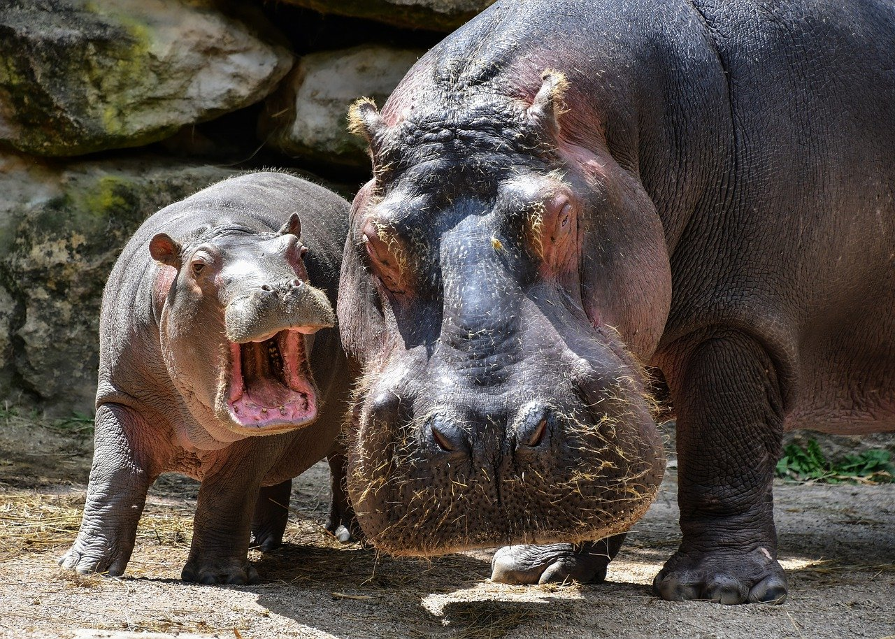
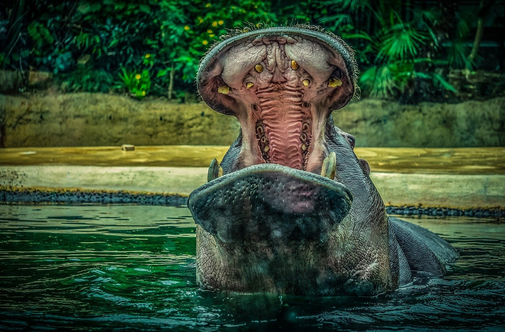
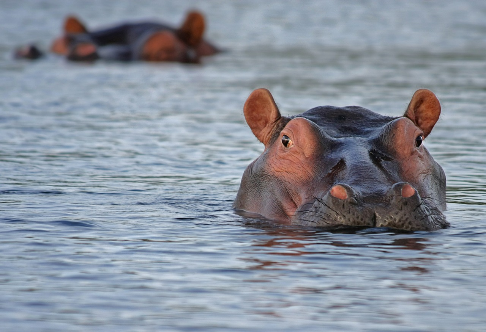

1.分類
学名︰Hippopotamus amphibius
偶蹄目/鯨偶蹄目カバ科カバ属に分類される偶蹄類。
丸みを帯び、脚の短いずんぐりとした体つきがブタと相似をなすことから、同じ猪豚亜目に属するとされていたが、DNA分析の結果において、カバはイノシシ類よりもウシと近縁であり、クジラとの遺伝的関係が最も近い陸上動物であるとした。
2.身体的特徴
陸上動物としてはゾウ、サイに次ぐ3番目の重さとされる。分厚い脂肪と真皮・上皮で覆われるが、表皮は非常に薄い。このため毛細管現象により水分は外側へ放出してしまう。
頭部は大型。顔の側面に鼻・眼・耳介が一直線に並んで位置する。これにより水中から周囲の様子をうかがいながら呼吸することができる。鼻孔は内側の筋肉が発達して自由に開閉することができ、水中での浸水を防ぐことができる。顎の筋肉が非常に発達しており、関節の構造と相まって、口を150度まで開くことができる。
3.生態的特徴
オスは単独で生活するか、優位のオスは群れの周囲に縄張りを形成する。口を大きく開ける・糞をまき散らす・後肢で蹴りあげる・鼻から水を出す・唸り声をあげるなどして威嚇し縄張りを主張するが、オス同士で犬歯で噛みつくなど激しく争うこともあり命を落とすこともある。
昼間は水中で生活し、夜間は陸上に上がり採食を行う。陸上での行動範囲は水場から3キロメートルだが、水場と採食場の途中に泥浴びを行える場所があればさらに拡大し、水場から最大で10キロメートル離れた場所で採食を行うこともある。比重が水よりわずかに大きく体が水に沈むため水底を歩くことができ、また呼吸の際に肺を大きく膨らませることで浮かぶこともできる。
4.食性／繁殖
食性
食性は植物食で、草本・根・木の葉などを食べる。1日あたり40キログラムの食物を食べる。
繁殖
妊娠期間は210～240日。主に水中で1回に1頭の幼獣を産む。オスは生後5歳、メスは生後4歳程度で性成熟する。平均寿命は約30年。繁殖力が高い反面、同じ一族の子孫による近親交配も多い。
5.生息分布
サハラ砂漠以南のアフリカ大陸。アルジェリア、エジプト、モーリタニアでは絶滅。なお、南米のコロンビアでは麻薬王のパブロ・エスコバルによって飼育されていたカバが、エスコバルが殺害された1993年以降に野生化しており、個体数を増やしている。
6.起源／歴史
人間とカバの関りは、カバを食肉加工した形跡が見つかったアフリカのブーリ層（英語版）から、16万年前にまでさかのぼれることが判明している。カバを狩る図が掛かれた4,000～5,000年前の絵や彫刻も発見されている。
古代エジプト人はカバをナイルの獰猛な動物であると認識し、貴族の墓には狩猟対象とした図が描かれている。